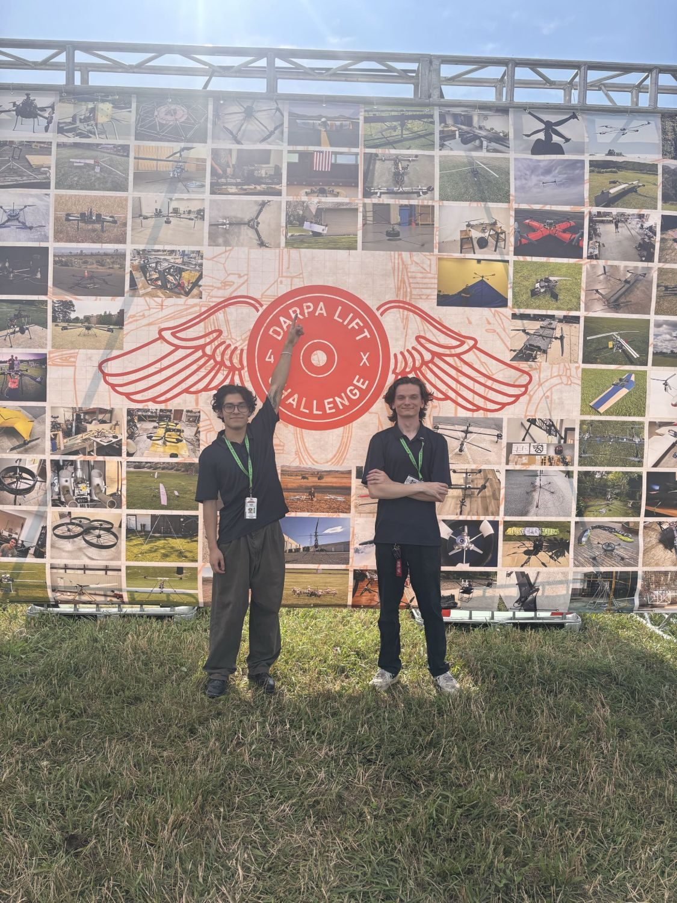

ASTRO Systems
Co-Founder & Integration Engineer · 2025 – Present
3-person aerospace startup building heavy-lift drones with a 360° airfoil body and gimbaled VTOL propulsion (patent pending).
- One of 124 teams selected out of 480+ invited to DARPA’s Heavy Lift Challenge (DLC-1 2026)
- Avionics selection and control algorithms: GPS, flight computer, ESCs, power electronics
- Remote Pilot in Command; safety and compliance across flight testing
- Bill of materials, vendor sourcing, sponsorship; multiple flight-ready prototypes
